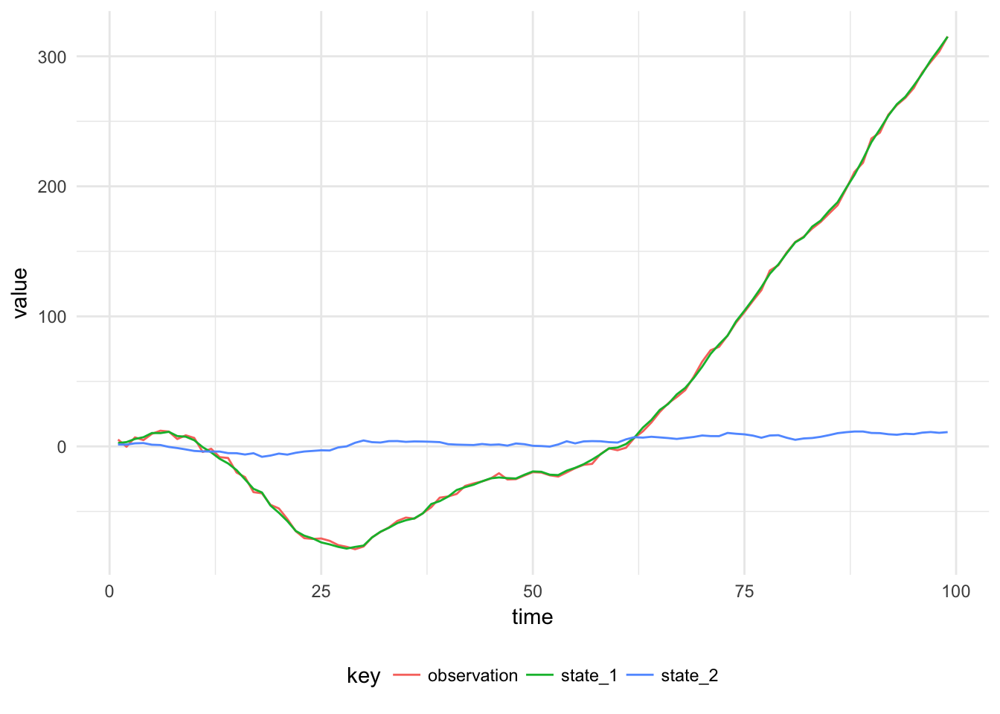

The data is simulated from a second order DLM:
\[\begin{align} Y_t &= F \textbf{x}_t + v_t, \quad v_t \sim \mathcal{N}(0, V), \\ \textbf{X}_t &= G \textbf{x}_{t-1} + \textbf{w}_t, \quad w_t \sim \textrm{MVN}(0, W), \\ \textbf{X}_0 &\sim \textrm{MVN}(m_0, C_0). \end{align}\]
The state is two dimensional, as such the system noise matrix \(W\) is a \(2 \times 2\) matrix. The observation and system evolution matrices do not depend on time, the observation matrix is \(F = (1 \quad 0)\) and the system evolution matrix is:
\[G = \begin{pmatrix} 1 & 1 \\ 0 & 1 \end{pmatrix}.\]
In order to examine the properties of this model, first we can simulate a time series of values from it:
import dlm.model._
import breeze.linalg.{DenseMatrix, DenseVector, diag}
val mod = Dlm.polynomial(2)
val p = Dlm.Parameters(
DenseMatrix(3.0),
diag(DenseVector(2.0, 1.0)),
DenseVector(0.0, 0.0),
diag(DenseVector(100.0, 100.0))
)
val data = Dlm.simulateRegular(0, mod, p).
steps.
take(1000).
toArraySimulated values from the Second Order DLM with parameters, \((V, W, extbf{m}_0, C_0) = (3.0, extrm{diag}(2.0, 1.0), (0.0, 0.0), extrm{diag}(100.0, 100.0))\)
Kalman Filtering can be performed to learn the posterior distribution of the states, given the observations:
val filtered = KalmanFilter.filter(mod, data.map(_._1), p)Filtered State of the second order model, with 90% probability intervals
The parameters can be learned using Gibbs sampling. The state evolution distribution and the observation distribution are Gaussian with unknown variance \(W\) and \(V\) respectively. The state is assumed to have a diagonal, \(2 \times 2\) covariance matrix and hence the unknown variances are chosen to have Inverse Gamma priors. The Inverse Gamma distribution is conjugate to the Normal distribution with known mean and unknown variance. To perform gibbs sampling using the Bayesian DLMs package:
val iters = GibbsSampling.sample(
mod,
InverseGamma(4.0, 9.0),
InverseGamma(5.0, 8.0),
p,
data.map(_._1))## V W1 W2
## Min. :1.850 Min. :0.7802 Min. :0.7099
## 1st Qu.:2.792 1st Qu.:1.5999 1st Qu.:1.0273
## Median :2.991 Median :1.9401 Median :1.1170
## Mean :2.987 Mean :1.9919 Mean :1.1279
## 3rd Qu.:3.186 3rd Qu.:2.3262 3rd Qu.:1.2179
## Max. :4.153 Max. :4.4945 Max. :1.9773